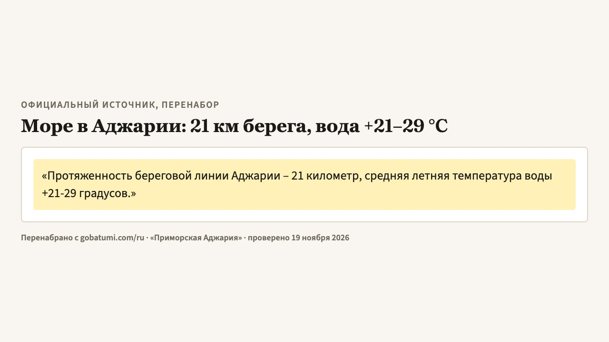

- Береговая линия Аджарии
- 21 км
- Море летом (GoBatumi)
- +21–29 °C
- Средняя за сутки в августе
- 23,2 °C
- Осадки за год
- около 2 500 мм
- Скорая и полиция
- 112
Статья входит в «Путеводитель по Грузии». Данные о городе — по русской Википедии (вторичный источник): по переписи 2024 года здесь живут 235 668 человек. Проверено 19 ноября 2026 года.
Что посмотреть в Батуми: главные достопримечательности
Главные достопримечательности Батуми — у воды и в старом центре: бульвар, площади, скульптуры. Отдельно, за городом, стоит Ботанический сад.
Наш совет: начните с набережной, а потом идите в старый город. На сад выделите отдельно полдня: он в 9 км от центра и стоит на склоне.
Батумский бульвар
Это приморская набережная длиной около 7 км. У неё долгая история. На русской странице GoBatumi — сайта туристического департамента Аджарии — сказано: «Его строительство началось в 1881 году». А «в 2009 году территория Батумского бульвара была значительно увеличена, и сегодня ее протяженность составляет около 7 километров».
Что там есть. Вдоль набережной, по словам GoBatumi, — множество «бунгало, лаундж-кафе, ресторанов, детских аттракционов и различных цветных и „танцующих“ фонтанов».
Али и Нино. С этой скульптуры туристический сайт советует начинать прогулку. Рядом с маяком стоит Алфавитная башня. Её высоту мы не приводим: в источниках цифры расходятся.
Wi-Fi. На бульваре есть бесплатный общественный Wi-Fi, пишет GoBatumi в советах для гостей.

Старый город: Пьяцца и площадь Европы
Здесь самые известные площади и статуи. Туристический департамент Аджарии называет Батуми «городом свиданий» и перечисляет места для встреч: Пьяццу и статую «Мальчик с флейтой», площадь Европы с астрономическими часами неподалёку, Алфавитную башню у маяка, статуи Медеи и «Али и Нино».
Мальчик с флейтой. Статуя стоит рядом с Пьяццей, в нише старого дома на улице Горгасали. В английской версии GoBatumi её называют символом города.
Площадь Европы. Рядом с ней — астрономические часы. От этой площади GoBatumi считает расстояние до Махунцети — о водопаде ниже.
С детьми. Можно сходить в дельфинарий: по данным GoBatumi, он впервые открылся в 1975 году, в амфитеатре 887 мест, а представления идут в любую погоду.
Ботанический сад Батуми
Сад находится в 9 км от центра и тянется вверх по склону от самого берега. GoBatumi пишет: «В 1912 году по инициативе профессора Харьковского университета Андрея Краснова был открыт сам Ботанический сад, который расположен в 9 километрах от центра Батуми».
Склон. Сад занимает около 1 км побережья и поднимается по холму до высоты 220 м. Растения разбиты на 9 фитогеографических отделов — по местам, откуда они родом.
Часы работы. На сайте сада, bbg.ge, указано: с понедельника по воскресенье, с 09:00 до 17:30. Часы могут меняться — проверьте перед поездкой. На английской версии сайта сад пишет, что за год его посещают больше 100 тысяч человек.
Наш совет: удобная обувь для склонов. Дорожки всё время идут то вверх, то вниз. Летом приезжайте с утра, пока воздух не прогрелся, и берите воду.

Море и пляжи Батуми
Берег галечный, а купаются здесь с мая. На странице «Приморская Аджария» GoBatumi пишет: «Протяженность береговой линии Аджарии – 21 километр, средняя летняя температура воды +21-29 градусов.»
Галька, а не песок. На английской странице того же раздела GoBatumi прямо пишет о гальке на берегу. Наш совет: возьмите обувь для воды — босиком по гальке ходить больно.
Когда купаться. По словам GoBatumi, «Гости могут загорать или плавать уже с начала мая на пляжах Сарпи, Гонио, Квариати, Батуми, Махинджаури, Цихисдзири, Мтсване Контцхи и Кобулети». И дальше: «Море становится еще приятнее в сентябре и октябре».
Курорты рядом. В курортную зону Аджарии, кроме самого города, GoBatumi включает Кобулети, Цихисдзири, Чакви, Зеленый мыс, Гонио, Квариати и Сарпи.
Температура воды. У GoBatumi — средняя летняя, от +21 до +29 °C. Температуры воды по месяцам в официальных источниках мы не нашли.
Спасатели в сезон 2026 года. 20 июня 2026 года МВД Грузии открыло летний сезон в городе. Министр сообщил, что в Аджарии мобилизованы дополнительные силы полиции и спасателей. В конце прошли учения по спасению на воде, пишет правительство Аджарии (на английском). Официального списка охраняемых участков берега мы не нашли — спросите в отеле.
Наш совет. Купайтесь там, где работают спасатели. Не заходите в воду после шторма и после алкоголя.
Солнце и вода. Британская служба здравоохранения NHS в советах о защите от солнца предупреждает: вода смывает солнцезащитный крем, а прохлада мешает заметить, что вы обгораете. К тому же вода отражает ультрафиолет. Наносите крем заново сразу после купания.

Погода в Батуми по месяцам
Лето жаркое и влажное, осень дождливая. В таблице — климатические нормы 1981–2010 годов для станции в аэропорту по данным NOAA, как их приводит английская Википедия. Это средние за 30 лет, а не прогноз на завтра. Дождливым считается день, когда выпало не меньше 1 мм.
| Месяц | Средняя за сутки, °C | Осадки, мм | Дней с дождём |
|---|---|---|---|
| Январь | 5,4 | 235 | 14,0 |
| Февраль | 6,8 | 183 | 12,7 |
| Март | 8,7 | 157 | 12,6 |
| Апрель | 12,4 | 90 | 9,6 |
| Май | 16,0 | 93 | 9,6 |
| Июнь | 20,2 | 141 | 9,9 |
| Июль | 22,6 | 165 | 10,1 |
| Август | 23,2 | 221 | 11,5 |
| Сентябрь | 20,1 | 330 | 11,1 |
| Октябрь | 16,5 | 322 | 12,4 |
| Ноябрь | 12,0 | 306 | 12,2 |
| Декабрь | 6,8 | 278 | 13,1 |
Осадки в таблице округлены до целого миллиметра.
Теплее всего — в августе и июле: в среднем 23,2 и 22,6 °C за сутки. Рекорд жары в той же таблице — 40,8 °C, в июле.
Дождливее всего — с сентября по ноябрь: больше 300 мм в каждом месяце. За год выпадает в среднем 2 519 мм, а дождь идёт 10–14 дней в месяц. Английская Википедия называет город самым дождливым в Грузии и на всём Кавказе.
Суше всего — апрель и май, около 90 мм за месяц.
Влажность. GoBatumi называет климат Аджарии субтропическим, с мягкой зимой и жарким летом. Влажность воздуха обычно 70–80 %, по данным Википедии.

Когда лучше ехать: сезоны по нормам
Для купания без пиковой жары, по-нашему, лучше всего июнь и сентябрь (в сентябре — с поправкой на дожди). Вот что говорят нормы по сезонам.
- Весна. Апрель и май — самые сухие месяцы, около 90 мм дождя. В среднем за сутки 12,4 °C в апреле и 16,0 °C в мае. Купаться, по GoBatumi, можно уже с начала мая.
- Лето. В июне в среднем 20,2 °C за сутки, в июле — 22,6 °C, в августе — 23,2 °C. Это пик жары, но дожди тоже бывают: в августе — 221 мм.
- Осень. Сентябрь ещё тёплый, 20,1 °C, но это самый дождливый месяц года — 330 мм. В ноябре в среднем уже 12,0 °C.
- Зима. В среднем за сутки около 5–7 °C. Дождь идёт чаще, чем летом: в январе — 14 дней за месяц.
Наш совет: в сентябре и октябре возьмите куртку от дождя и непромокаемую обувь.
Батуми в октябре
Прохладнее и дождливее, чем летом. Средняя суточная температура — 16,5 °C, осадков — 321,5 мм, дней с дождём — 12,4. В таблице выше осадки округлены, поэтому там 322 мм.
По словам GoBatumi, вода в сентябре и октябре становится «еще приятнее».
Наш совет: планируйте прогулки на сухие часы, а Ботанический сад оставьте на день без дождя — на мокрых склонах скользко.
Жара и тепловой удар: что делать
Главное — не перегреться днём и знать признаки, при которых сразу звонят 112. Жаркие влажные дни июля и августа могут довести до теплового истощения, а оно — до теплового удара.
Британская служба здравоохранения NHS в памятке о перегреве советует:
- пить больше прохладных напитков, особенно если много двигаетесь;
- носить светлую свободную одежду;
- держаться в тени с 11 до 15 часов;
- не налегать на алкоголь.
Крем после купания. NHS советует наносить солнцезащитный крем заново сразу после воды — даже если на нём написано «водостойкий» — и примерно каждые 2 часа.
Солнечный ожог у воды. На пляже обгорают незаметно: вода, по NHS, отражает ультрафиолет, а прохлада скрывает ожог. Наш совет: в полдень уходите с берега в тень, а детям надевайте футболку и панаму.
Кто в группе риска. По NHS, присматривать стоит за детьми, пожилыми и людьми с хроническими болезнями — например, с диабетом или проблемами с сердцем.
Признаки теплового удара — звоните 112. NHS называет поводы вызвать скорую: человеку плохо и через 30 минут отдыха в прохладе, очень высокая температура, кожа горячая и не потеет, частые пульс и дыхание, путается сознание, судороги, потеря сознания. Пока ждёте скорую, NHS советует обернуть человека прохладной мокрой простынёй, обмахивать его или обтирать холодной водой.
Наш вывод: в Грузии — 112. В Грузии звонят 112, а 103 — российский номер, и здесь на него не рассчитывайте. 112 — единый номер полиции, пожарных и скорой, пишет GoBatumi. Вот как вызвать скорую по 112 и что сказать диспетчеру.

Окрестности: крепость Гонио и водопад Махунцети
Одна поездка — на юг вдоль побережья, другая — в горы. Город стоит примерно в 20 км к северу от границы с Турцией, по данным английской Википедии, так что Гонио — по дороге к ней. Помните: за городом медпомощь слабее, чем в городе.
Крепость Гонио
Это древняя крепость в 12 км к югу от столицы Аджарии. По данным GoBatumi (английская страница), Гонио-Апсарос стоит на левом берегу реки Чорохи и датируется I веком н. э.
Три эпохи. Крепость была римской, затем византийской, позже стала османской.
Легенда. Её историю связывают с мифом об аргонавтах: по преданию, здесь похоронен Апсирт.
Наш совет. Летом приезжайте с утра, возьмите воду и головной убор.
Водопад Махунцети и мост царицы Тамары
Оба места — примерно в 33 км от площади Европы, на реке Аджарисцкали. Эту цифру даёт статья GoBatumi 2018 года. Цены и расписание оттуда устарели, поэтому мы их не приводим.
Мост царицы Тамары. Каменный арочный мост длиной 28 м. По легенде, его построили в XII веке.
Водопад. Он через дорогу от моста, около 5 минут пешком.
Врачи дальше от города. В сельской местности Грузии не хватает медикаментов и медицинского персонала. Наш совет: обувь, которая не скользит на мокрых камнях, запас воды и номер 112 в телефоне.
Наличные. В регионах и сёлах, по GoBatumi, чаще платят наличными. Наш совет: возьмите с собой немного денег в лари.
Как добраться из Тбилиси в Батуми
Добираться проще всего поездом. В общем расписании Грузинской железной дороги указаны ежедневные скорые поезда Тбилиси — Батуми: № 802/801 и № 804/803. Время в пути и цены меняются — проверяйте на сайте перед поездкой.
Самолётом. Аэропорт Батуми — один из трёх международных аэропортов страны, по данным английской Википедии. Рейсы уточняйте у авиакомпании.
Расстояние. Расстояние по дороге мы не приводим: официальной цифры нет.
Больница и врач в Батуми: куда обращаться
В городе можно получить хорошую медпомощь, но не везде говорят по-английски. Качественные медицинские услуги обычно доступны в крупных городах — в Тбилиси и Батуми. Персонал может не говорить по-английски, а лечение бывает дорогим.
Если срочно — 112. Британский МИД в разделе о здоровье советует набрать 112 и попросить скорую. Если вас направили в клинику, сразу сообщите своему страховщику.
Деньги на лечение. Лечение бывает дорогим. Наш совет: держите полис и телефон службы помощи из него под рукой, а при угрозе жизни сначала звоните 112.
Где найти врача или больницу. Смотрите врачей и клиники Батуми в каталоге 100doc.ge. На 19 ноября 2026 года там 834 врача и 311 клиник, среди них есть больницы и стоматологии.
Язык. Наш совет: заранее запишите на английском адрес жилья, свои диагнозы и лекарства. Туристический информационный центр отвечает по телефону +995 577 90 90 93.
Полис. С 1 января 2026 года на въезде в Грузию нужен полис на всё пребывание с покрытием не меньше 30 000 лари — подробнее о правиле.
Укус собаки. Наш совет: укусила или поцарапала собака — сразу к врачу. Почему это важно, объясняем на странице о бешенстве в Грузии.
Едете дальше в горы — вот путеводитель по Казбеги.
Частые вопросы
Когда лучше ехать в Батуми?
По-нашему, в июне или сентябре (в сентябре — с поправкой на дожди): тепло и можно купаться. Теплее всего в августе и июле — в среднем 23,2 и 22,6 °C за сутки. С сентября по ноябрь выпадает больше 300 мм дождя в месяц.
Можно ли купаться в октябре?
Какой номер скорой в Грузии?
112 — единый номер полиции, пожарных и скорой.
Безопасно ли купаться?
Берег в Батуми галечный или песчаный?
Как добраться из Тбилиси?
Где найти врача в Батуми?
В каталоге 100doc.ge на 19 ноября 2026 года — 834 врача и 311 клиник, ссылка — в разделе «Больница и врач в Батуми». Если срочно — звоните 112.
Нужен ли полис для поездки?
Да. С 1 января 2026 года на въезде в Грузию нужен полис на всё пребывание с покрытием не меньше 30 000 лари.
Источники
- GoBatumi, туристический департамент Аджарии: бульвар ↑
- GoBatumi: долгий сезон, площади и статуи, купание с мая ↑
- GoBatumi: Приморская Аджария — береговая линия, температура воды, курорты ↑
- GoBatumi: Ботанический сад ↑
- GoBatumi: Пьяцца и Мальчик с флейтой (на английском) ↑
- GoBatumi: погода и сезоны (на английском) ↑
- GoBatumi: дельфинарий (на английском) ↑
- GoBatumi: крепость Гонио-Апсарос (на английском) ↑
- GoBatumi: Махунцети и мост царицы Тамары, 2018 (на английском) ↑
- GoBatumi: передвижение по региону — Wi-Fi, 112, туристический центр (на английском) ↑
- Сайт Ботанического сада: часы работы, расположение ↑
- Правительство Аджарии: открытие летнего сезона, 20 июня 2026 (на английском) ↑
- Русская Википедия: статья о городе (вторичный источник) ↑
- Английская Википедия: климатические нормы NOAA 1981–2010, аэропорт (вторичный источник) ↑
- Грузинская железная дорога: общее расписание (на английском) ↑
- Правительство Канады: рекомендации для путешественников, Грузия (на английском) ↑
- Британский МИД: здоровье (на английском) ↑
- NHS: перегрев и как его избежать (на английском) ↑
- NHS: солнцезащитный крем и защита от солнца (на английском) ↑
- GoBatumi: Приморская Аджария — галечный берег (на английском) ↑
- Сайт Ботанического сада: английская версия — число посетителей в год (на английском) ↑
Это справочная информация, а не медицинская консультация: лечение назначает врач. Проверено 19 ноября 2026 года.